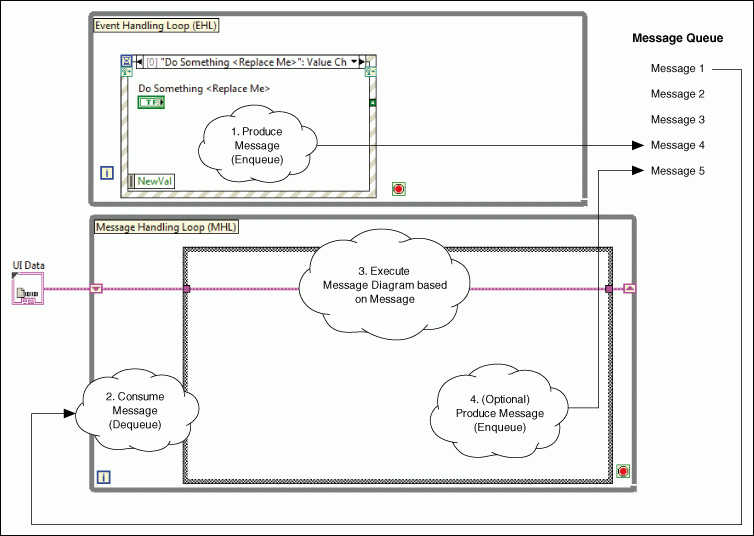
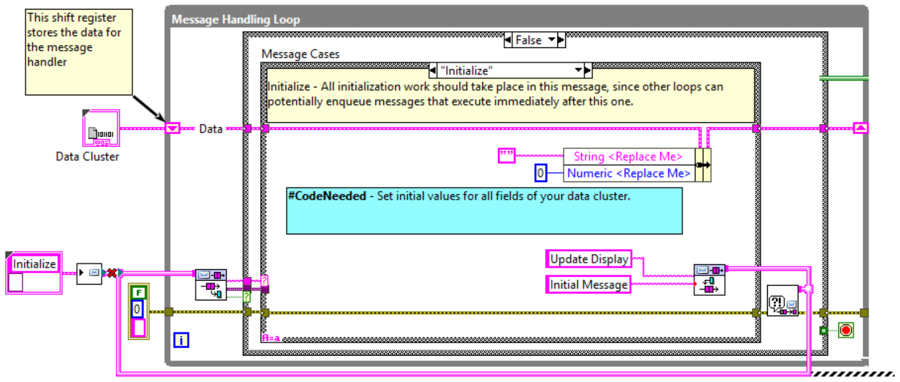
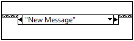
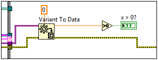
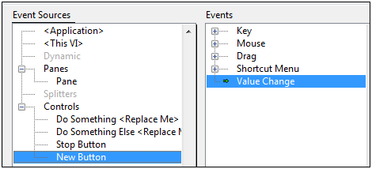
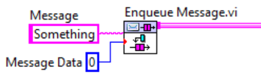
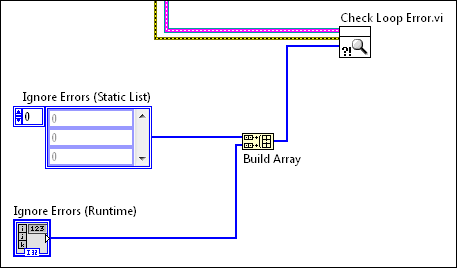

Channeled Message Handler
The Channeled Message Handler (CMH) template facilitates multiple
sections of code running in parallel and sending data between them.
Each section of code represents a task, such as acquiring data, and is
designed similarly to a state machine. Because of this design, you can
divide each task into states.
The CMH template is a version of the Producer/Consumer design
pattern, where the user interface (producer) produces messages and the
tasks (consumers) consume them. However, in the CMH template, you also
can also have the consumer loop generate messages for itself.
This template includes one producer loop and one consumer loop. You
can add consumer loops as needed.
This template is very similar to the Queued Message Handler, which
uses queue refnums, an older G syntax still commonly in use. National
Instruments finds that the channel syntax is easier to read and
maintain for most users.
System Requirements
LabVIEW Base, Full, or Professional Development System
Use Cases
The CMH template is useful for applications where multiple tasks
occur in parallel, often at different rates. For example, consider an
application that continuously acquires, logs, and displays two signals:
an RS-232 signal and an analog signal. These signals occur at different
rates, so the application must have two loops that run in parallel. In
addition, each loop is divided into the following states:
- Initialize the data acquisition hardware
- Acquire data
- Log the acquired data to disk
- Display the acquired data in a waveform chart
- Set the hardware to a safe state
- Stop the data acquisition and shut down the hardware
The application requires a responsive user interface; that is, users
should be able to click buttons even while the application is executing
another command. Therefore, the application requires a third parallel
loop that continuously monitors the front panel for events, such as the
following commands:
- Start RS-232 acquisition
- Stop RS-232 acquisition
- Enable RS-232 logging
- Disable RS-232 logging
- Start analog data acquisition
- Stop analog data acquisition
- Enable analog data logging
- Disable analog data logging
The CMH template provides a starting point for writing this kind of
application.
Overview

This template repeatedly executes the following steps:
- A user interacts with the front panel, causing the Event
structure in the Event Handling Loop (EHL) to produce a message.
LabVIEW stores the message in a queue, represented by a messenger
channel wire.
- The Message Handling Loop (MHL) reads a message from the message
queue, removing the message.
- The
message is a string that matches one of the subdiagrams of the Case
structure in the MHL. Therefore, reading the message causes the
corresponding subdiagram of the Case structure to execute. This
subdiagram is called a message diagram because it corresponds
to a message.
- Optionally, the message diagram produces another message, storing
it in the message queue.
Notes:
- The EHL is the producer loop. The MHL is the consumer loop.
These loops run in parallel and are connected by the messenger channel,
which facilitates communication between the loops.
- The
messenger channel queues messages for consumption. Because the EHL
writes messages to this buffer and not directly to the MHL, the EHL can
produce messages while the MHL is not consuming them. If you had
multiple consumer loops, each consumer loop would have its own
messenger channel wire.
- Every iteration of the MHL reads the
oldest message in the message queue and then executes the corresponding
message diagram. Although the MHL primarily consumes messages, it also
can produce them.
- Each loop handles errors using a
loop-specific error handler subVI. In this template, if EHL generates
an error, LabVIEW displays an error message without stopping
theapplication. If the MHL generates an error, LabVIEW displays an
error message and stops the application. You may choose to change this
behavior in your application.
- Your application can have multiple MHLs. Each MHL
corresponds to a task the application performs, such as acquiring or
logging data.
- Notice the UI Data cluster in
the above diagram. This cluster is data that each message diagram in an
MHL can access and modify. In this template, the cluster is defined as
a typedef, UI Data.ctl.If you had multiple consumer loops, each
consumer loop would have its own data typedef.
Running This Template
- In the Project Explorer window, open and run
Main.vi.
- Click the front panel controls and watch the Display
indicator display messages.
Modifying this Template
Determining Your Needs
The following table summarizes the design decisions you must make
when modifying this template:
| Design Decision |
Example |
Detailed Information |
| You need to determine how many MHLs to add.
Each MHL defines a task that executes in parallel with other tasks. |
You have an application that acquires data
and, in parallel, logs this data to disk.
This application consists of two tasks: data acquisition and data
logging. Therefore, you need two Message Handling Loops.
|
Creating a Message
Handling Loop |
For each MHL, you need to determine what
message diagrams to add.
A
message diagram is a subdiagram of the Case structure in an MHL. Each
subdiagram corresponds to a state the task can be in; therefore, to
determine the message diagrams to add, separate each task into states.
|
You want to separate the data
acquisition task into three states: Initialize, Acquire Data, and Exit.
Therefore, create these message diagrams in the MHL that acquires data.
You
want to separate the data logging task into three states: Initialize,
Log, and Close. Therefore, create these message diagrams in the MHL
that logs data.
|
Creating a Message
Diagram |
| You must determine what data the message
diagrams of an MHL need. |
Each
message diagram of the data acquisition MHL needs access to a hardware
reference. The Initialize message diagram needs to open this reference,
the Acquire Data diagram uses this reference to acquire data, and the
Exit message diagram closes the reference. |
Defining Data that
a Message Handling Loop Needs |
| You
need to determine when to execute each message diagram. A message
diagram executes after its MHL receives the appropriate message.
Therefore, you need to determine when to send each message to the MHL.
You can send a message from a front panel control or from a message
diagram. |
You want to add a button that sends the
Initialize message to the data acquisition MHL.
You then want the Initialize message diagram to send the Acquire Data
message to the same MHL.
|
Adding a Control that
Sends a Message to a Message Handling Loop or Sending a Message to a Message Handling Loop,
depending on whether you want a control to send the message. |
| You need to determine if you want to ignore
any specific errors within the EHL or the MHL. |
When reading messages from the message
queue, you want to ignore network timeout errors. |
Ignoring Errors in
the Event Handling Loop and Message Handling Loop |
Creating a Message Handling Loop
A Message Handling Loop (MHL) represents a task the application can
perform, such as acquiring data or logging data, in parallel with other
tasks. Each MHL can be divided into sub-tasks that correspond to
states. MHLs consist of the following components:
- A message queue
- A While Loop that reads messages from the message queue
- A
Case structure that contains a subdiagram, also known as a message
diagram, for each possible message that can be read, where each message
corresponds to a state of the task
- (Optional) Data that each message diagram of the MHL can access
Complete the following steps to add an MHL to Main.vi:
- Select the existing Message Handling Loop, all of the nodes to
the left of it, and the channel wire under it.
- Ctrl+drag all of the selected items down to create a new loop.
Your code will look like this:

- In the True case of the outer case structure, select the code
shown below and delete it.

This is because only one loop should raise the stop signal for the
event loop, and the original MHL is already doing that.
- Choose one:
- If the MHL needs access to data, create a new typedef that
represents this data. Replace the copied "Data Cluster" terminal with a
constant of your new typedef type.
- Otherwise, delete the copied "Data Cluster" terminal, delete
the shift register, and delete the broken wires in all the frames.
- Delete any frames of the Message Cases case structure that are
not needed in your new loop.
- In the original MHL loop, in the shutdown code, add a call to
Message Queue.lvlib:Abort Message Queue.vi. Wire the output channel of
that node to the broken channel wire under your new loop. Now when the
main loop receives the Stop message, it will take care of stopping your
secondary loop.
- (Optional) Only do this if your new loop can be stopped on its
own and needs to signal the rest of the application to also stop. Add
to the Stop frame of your new loop a call to Message Queue.lvlib:Abort
Message Queue.vi. Wire the output channel of this node to the pink
channel wire of the original MHL. Now, when your new loop gets stopped,
it will signal the original MHL to stop.
- Add message diagrams
to the Case structure in the MHL. To minimize errors and unexpected
behavior, ensure each MHL has the following message diagrams:
- A message diagram that initializes the task; for
example, this diagram could connect to a hardware device, open files
for data logging, and so on.
- A message diagram that handles
unrecognized messages.
- Send messages to the new MHL.
Note: To
keep the block diagram of Main.vi compact and readable, you can
encapsulate each MHL into a subVI. To further organize the project, you
can put each subVI, any supporting VIs, and its data typedef into a
project library. Refer to the Continuous Measurement and Logging sample
project, available from the Create Project dialog
box, for an example of this design.
Creating a Message Diagram
A message diagram is the subdiagram of a Case structure, located in
a Message Handling Loop, that handles a particular message. It is
similar to a state in a state machine.
A message diagram is a subdiagram of a Case structure that is
labeled with a string. It executes when the MHL receives a message that
matches this label.
Complete the following steps to create a message diagram:
- In the MHL that represents the task, add a subdiagram to the Case
structure.
 |
Tip
If you are adding a message diagram to the MHL included in the
template, you can automatically include the data and error wires in the
new message diagram by duplicating the ---Copy This Frame--- case. |
- In the case selector label, enter the text of the message
that will trigger this message diagram to execute. For example, the
following message diagram executes when LabVIEW reads New Message from the message queue:

- Add code that executes upon receiving this message. As you do
this, pay attention to the following guidelines:
- To access and modify task data, use the In-Place Element structure:
- To ensure that you track all errors, use the Merge Errors
function to merge errors coming from all nodes in the subdiagram.
- To access message data, wire the Message Data
input tunnel to a Variant to Data function:

- To
send a message to a message queue, wire the pink channel wire to the
border of the structure where you want to send the message, then right
click on the channel wire and select Create >> Channel Writer.
- To execute the message diagram, send a
message to the MHL using the the label of
the message diagram that you entered in step 2 and data of the type you used in step 3.
Defining Data that a Message Handling Loop Needs
In the template, UI Data.ctl is the typedef that
defines the cluster of data that the MHL can access:

Modify this typedef according the needs of your application. For
example, if more than one message diagram in an MHL needs to modify the
same Boolean control, add a Boolean control to this typedef.
If you have more than one MHL, create a typedef for each one. This
design prevents errors by ensuring one MHL cannot access the data of
another.
Adding a Control that Sends a Message to a Message Handling Loop
- Add a control to the front panel.
- (Optional) If you want a message diagram to programmatically
modify this control, bundle the control
refnum into the typedef for that MHL.
- Add an Event case to the Event structure in the Event Handling
Loop.
- Configure the event to trigger when the value of this new button
changes:

- Click OK. LabVIEW creates an event case in the
Event structure.
- Associate the terminal with the event by dragging the block
diagram terminal for the new control inside this event case.
- Add code to this event case that sends a
message to an MHL.
Sending a Message to a Message Handling Loop
Messages are strings that instruct an MHL to execute one of its
message diagrams. Messages are produced by the EHL and are stored in
the message queue. Every iteration of the MHL reads the oldest message
in the message queue and executes the corresponding message diagram.
Complete the following steps to send a message to an MHL:
- Decide what message you want to send. Find the message case
structure frame that corresponds to that message and make a note of its
label. That string will be the message string. If the message has
associated data, note what type is wired into the Variant To Data node.
- Decide what part of the application will send the message. At
that location, add the following code. For Message, use the string you
noted in step 1. For Message Data, use a constant of the type noted in
step 1, or leave it out.

LabVIEW displays a coercion dot on the message data input terminal because the data
type of this terminal is variant.
Note: If the message you want to send is the instruction to stop the
MHL, instead of Enqueue Message.vi, use Abort Message Queue.vi instead.
- Connect the pink channel wire output from Enqueue Message to the channel wire of the MHL that will receive the message.
|
Note Access the Enqueue
Message VI from the Project Explorer window of the
template or by using Quick Drop. |
Handling Unrecognized Messages
Ensure all Case structures in an MHL have a Default
message diagram. The code in this message diagram executes when the MHL
reads a message that does not have a corresponding message diagram.
Having a Default
message diagram is important because
messages are strings that you enter while programming, not values you
select from an enum. For this reason, some people prefer to make the
message list be an enum type, but this causes a lot of code churn when
you have to update the enum in the future.
Ignoring Errors in the Event Handling Loop and Message Handling Loop
You can specify a list of errors to ignore for both the EHL and MHL
using their respective error handler subVIs by completing the following
procedures:
- In the Project Explorer window, open Error
Handler - Event Handling Loop.vi or Error Handler - Message Handling
Loop.vi, depending on where you want LabVIEW to ignore the errors, and
display the block diagram.
- Find the array constant labeled Ignore Errors (Static
List):

To ignore errors in the EHL or MHL, add error codes to the array.
Specify one error code per array element. The errors to ignore depend
on your application. For example, if you are reading the queue over a
network, you might want to ignore timeout errors.
You also can specify ignore errors dynamically at runtime by wiring
an array control to the Ignore Errors (Runtime) input
of the error handler subVI. Specify one error code per array element.
LabVIEW treats all errors that you do not specify as ignore errors
as regular errors. If the regular errors occur in the EHL, LabVIEW
sends Error messages to the message queue. You can define how the MHL
consumes the Error messages. If the regular errors occur in the MHL,
LabVIEW sends Exit messages to the message queue. Make sure that the
CMH stops by executing the Exit message diagram. The regular errors in
the MHL may place the CMH in an unknown state.
Related Information
Refer to the LabVIEW Help, available by selecting Help»LabVIEW
Help from LabVIEW, for information about LabVIEW concepts or
objects used in this template. You also can use the Context
Help window to learn basic information about LabVIEW objects
as you move the cursor over each object. To display the Context
Help window in LabVIEW, select Help»Show Context Help.
Refer to the Continuous Measurement and Logging sample project,
available from the Create Project dialog box, for an
example of adapting this template to a measurement application.
Legal Information
Copyright
© 2014–2020 National Instruments. All rights reserved.
Under the copyright laws, this publication may not be reproduced or
transmitted in any form, electronic or mechanical, including
photocopying, recording, storing in an information retrieval system, or
translating, in whole or in part, without the prior written consent of
National Instruments Corporation.
NI respects the intellectual property of others, and we ask our
users to do the same. NI software is protected by copyright and other
intellectual property laws. Where NI software may be used to reproduce
software or other materials belonging to others, you may use NI
software only to reproduce materials that you may reproduce in
accordance with the terms of any applicable license or other legal
restriction.
End-User License Agreements and Third-Party Legal Notices
You can find end-user license agreements (EULAs) and third-party
legal notices in the following locations after installation:
- Notices are located in the <National
Instruments>\_Legal Information and <National
Instruments> directories.
- EULAs are located in the <National
Instruments>\Shared\MDF\Legal\license directory.
- Review <National
Instruments>\_Legal Information.txt for information on
including legal information in installers built with NI products.
U.S. Government Restricted Rights
If you are an agency, department, or other entity of the United
States Government ("Government"), the use, duplication, reproduction,
release, modification, disclosure or transfer of the technical data
included in this manual is governed by the Restricted Rights provisions
under Federal Acquisition Regulation 52.227-14 for civilian agencies
and Defense Federal Acquisition Regulation Supplement Section
252.227-7014 and 252.227-7015 for military agencies.
IVI Foundation Copyright Notice
Content from the IVI specifications reproduced
with permission from the IVI Foundation.
The IVI Foundation and its member companies make
no warranty of any kind with regard to this material, including, but
not limited to, the implied warranties of merchantability and fitness
for a particular purpose. The IVI Foundation and its member companies
shall not be liable for errors contained herein or for incidental or
consequential damages in connection with the furnishing, performance,
or use of this material.
Trademarks
Refer to the NI Trademarks and Logo Guidelines
at ni.com/trademarks for information on NI trademarks. Other product and company names
mentioned herein are trademarks or trade names of their respective
companies.
Patents
For patents covering the NI products/technology, refer to the
appropriate location: Help»Patents in your software,
the patents.txt file on your media, or
the NI Patent Notice at ni.com/patents.